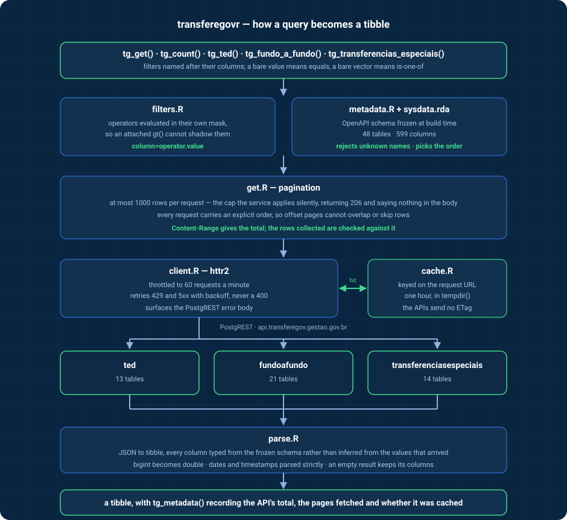

An R interface to the open data APIs of TransfereGov, the Brazilian federal government’s platform for transfers to states, municipalities and civil society.
What this package covers
The package targets the public API host, api-publica.transferegov.gestao.gov.br, which publishes three modules and 55 tables in all:
| Module | Covers | Tables |
|---|---|---|
especiais |
Special transfers, created by Constitutional Amendment 105/2019 for individual parliamentary amendments | 20 |
fundoafundo |
Fund-to-fund transfers, from federal funds directly to state, district and municipal funds | 20 |
parcerias |
Partnership management: programs, proposals, partnerships, their financial execution and bank statements | 15 |
Every table in the three published data models is reachable. Where the API folds a child table into its parent rather than giving it an endpoint of its own, it arrives as a list column — 5 of them in fundoafundo, 13 in parcerias — and tg_fields(nested = ) describes what is inside.
What it does not cover
-
ted, decentralized credit between federal bodies (termo de execução descentralizada), 13 tables. It has not been published on the public API host; it exists only on the olderapi.transferegov.gestao.gov.brservice, which the government is decommissioning on 2026-08-31. Unless TED is republished before then, it stops being available as an API at all. -
The older PostgREST endpoints for special and fund-to-fund transfers on that same host, retired on the same date. They are a different and largely superseded contract — different column names, a handful of columns each way, and a
historico_pagamento_especialtable that the new service does not carry. - The Discricionárias e Legais module (SICONV), which has no API: it is published as CSV archives at https://api-publica.transferegov.gestao.gov.br/downloads. The government has announced APIs for it in four stages between July 2026 and October 2027, starting with preparatory acts.
Installation
# install.packages("pak")
pak::pak("StrategicProjects/transferegovr")Getting started
library(transferegovr)
tg_modules()
tg_tables("parcerias")
tg_fields("parcerias", "proposta")
tg_params("parcerias", "proposta")tg_get() retrieves rows. Each filter is named after one of the endpoint’s own query parameters, and parameters combine with AND:
tg_get(
"parcerias", "proposta",
sg_uf_recebedor = "PE",
situacao_proposta = "Aprovada",
.limit = 20
)That is the whole filtering vocabulary. These services compare for equality and nothing else — no greater-than, no pattern match, no “is one of” — and they publish no ordering or column-selection parameter. tg_params() lists what each table accepts, including the permitted values of the enumerated parameters.
A typo must not look like an answer
These services ignore a query parameter they do not recognize and answer 200 with the whole table. Misspell situacao_proposta and you get 88,666 rows where the filter would have given 84,258 — a plausible number, quietly wrong.
So every parameter name is checked against the packaged schema before a request goes out:
tg_count("parcerias", "proposta", in_situacao_proposta = "Aprovada")
#> Error in `tg_count()`:
#> ! Unknown filter: "in_situacao_proposta".
#> ✖ The API ignores a parameter it does not recognize and returns every row, so
#> this would look like a query that matched nothing in particular.
#> ℹ Did you mean "situacao_proposta"?Enumerated values are checked the same way, before the round trip rather than after it.
Size first, download second
The services return at most 200 rows per request, and these tables are not small. Ask before you fetch:
tg_count("especiais", "meta_especiais")
#> [1] 156060.limit counts rows, not pages. Anything above 200 is collected page by page, and the total collected is checked against what the API reported:
metas <- tg_get("especiais", "meta_especiais", .limit = Inf)
tg_metadata(metas)$total_rows
tg_metadata(metas)$pagesTypes
Columns are typed from the API’s own schema rather than guessed, so a column that happens to be entirely null on one page does not change class on the next:
Freshness and caching
Each module reports when it was last loaded, which is the only freshness signal these APIs give — they send no ETag, Cache-Control or Last-Modified:
tg_updated_at("parcerias")
#> [1] "2026-08-03 UTC"Responses are cached for an hour in the session’s temporary directory, so nothing is written outside the session unless you ask for it. To keep them between sessions:
tg_cache_dir(tools::R_user_dir("transferegovr", "cache"))or set TRANSFEREGOVR_CACHE_DIR in your .Renviron. tg_cache_clear() empties it.
How it works

Two things in that picture are where a naive client of these APIs loses data:
- An unrecognized parameter is ignored, not rejected. The request succeeds and returns everything. Validating names client-side is the only defense, which is why the packaged schema freezes the parameter list and not just the columns.
- Repeating a parameter does not combine conditions. The service keeps the last occurrence and discards the rest without saying so, so the package refuses a repeated or multi-valued filter rather than sending one.
Page order is the server’s — these APIs publish no ordering parameter — so it was verified rather than assumed: the same rows come back in the same sequence across page sizes, across repeated calls, 100,000 rows deep, on tables with no key, and on tables with nested columns. tests/testthat/test-live.R keeps checking it.
Column names are in Portuguese
Table names, column names, parameter names and categorical values belong to the API and are left as the government publishes them. The package’s own functions, arguments and documentation are in English, with Portuguese aliases (tg_obter(), tg_contar(), tg_tabelas(), tg_campos(), tg_parametros(), tg_atualizado_em()) for the exported verbs.
Related
- obrasgovr — the ObrasGov public works API.